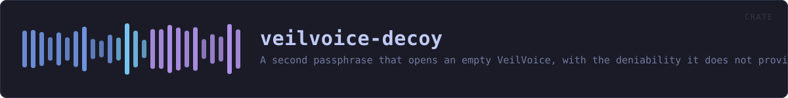

veilvoice-decoy
A second passphrase that opens an empty VeilVoice, with the deniability it does not provide stated plainly, and no passphrase that destroys anything.
reference · the same page on GitHub
A second passphrase that opens a different, empty VeilVoice.
What this is for, and what it is honestly worth
Somebody can be made to unlock a program. A decoy passphrase gives them something true to say: it opens VeilVoice, the application works, and there is nothing in it.
It does not give you deniability, and anyone who tells you otherwise is selling something. VeilVoice is open source. This file is published. An adversary who knows what they are looking at knows the feature exists, can read exactly how it works, and can simply ask for the other passphrase. What a decoy buys is a way to comply without revealing; what it does not buy is any argument that there is nothing more to reveal. SCOPE says that in the words a front end must show, and it is the most important thing this crate produces.
The destructive duress passphrase is deliberately not here
The roadmap asked for two things: a decoy, and a duress passphrase that destroys data. The second is not shipped, and WHY_NO_DESTRUCTION is the reason in full. In short: VeilVoice cannot promise a file is gone.
On flash storage a write does not overwrite. The controller maps a logical block to a new physical page and leaves the old one holding the data until it is garbage-collected, which may be minutes or may be never, and no program running as an ordinary user can reach it. This project already documents that about its own secure-erase feature and refuses to overstate it there.
A destructive duress passphrase would be believed in exactly the situation where being wrong costs the most. Somebody types it expecting the recordings to be gone; the ciphertext is still in unmapped pages; and they then behave as though it is not. A control people rely on and that does not work is worse than no control at all. So there is not one.
Typing the wrong one by mistake
The other failure the roadmap named, and the reason this shape was chosen. Because the decoy destroys nothing, typing it by accident costs a relaunch and nothing else. There is no state to recover and no decision that cannot be taken back. That is not a happy accident; it is why the destructive design was rejected rather than made safer.
Both passphrases are checked the same way
Which one matched must not be visible in how long the check took. Both are derived with the same Argon2id parameters and compared in constant time, and both are always derived even when the first one matches: returning early would make a real passphrase measurably faster than a decoy, which tells an observer with a stopwatch which of the two they just watched somebody type.
In plain words
You can set a second passphrase. Typing it opens VeilVoice normally, except that it is empty: no recordings, no projects, no history. It is there for the situation where somebody is standing over you asking you to unlock your computer.
Two honest warnings, and please read them.
It does not hide the fact that a second passphrase might exist. This program's source code is public and this feature is described in it, so anybody who recognises VeilVoice can ask you for the other one. It buys you a way to hand something over. It does not buy you an argument.
And there is no passphrase that destroys your recordings, deliberately. On modern storage, deleting a file does not reliably remove it, so a feature that claimed to would be lying to you at the worst possible moment.
HOW THE CRATE FITS TOGETHER
Every arrow is a crate:: or super:: path one module actually uses, read out of the source rather than drawn by hand.
The same graph as Mermaid source
%%{init: {"theme":"base","themeVariables":{"background":"#1a1b26","primaryColor":"#1f2335","primaryTextColor":"#c0caf5","primaryBorderColor":"#7aa2f7","secondaryColor":"#16161e","tertiaryColor":"#16161e","lineColor":"#737aa2","textColor":"#c0caf5","mainBkg":"#1f2335","nodeBorder":"#7aa2f7","clusterBkg":"#16161e","clusterBorder":"#2f3549","fontFamily":"ui-monospace, SFMono-Regular, Consolas, monospace","fontSize":"14px"}}}%%
flowchart TD
n_lib(["lib.rs<br/>466 lines"])
click n_lib href "https://github.com/tilas01/veilvoice/blob/main/crates/veilvoice-decoy/src/lib.rs" "open the source"This site loads no third-party script, so it cannot run Mermaid; the diagram above is the same nodes and edges drawn by the generator instead. GitHub renders the source below directly.
THE FILES
| File | Lines | What it is |
|---|---|---|
lib.rs | 466 | A second passphrase that opens a different, empty VeilVoice. |